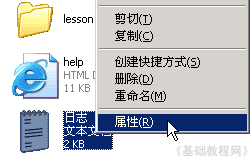
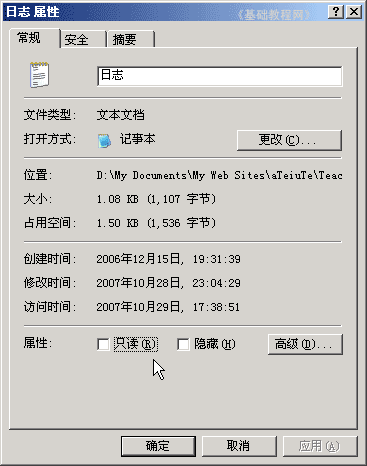
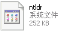
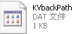

电脑操作基础
十一、文件属性 返回
在WinXP中数据是用文件来管理的，不同的数据文件也不同，比如文字、音乐、视频等等，他们都有不同的属性；
1、文件属性
1）打开“我的文档”，选择一个文件，瞄准图标点右键，选择“属性”命令；

2）弹出一个属性面板，里面就有文件的详细信息；

从上到下依次为：文件名“日志”、文件类型“文本文档”、文件存放位置、文件大小、创建和修改时间，
文件属性，打勾“只读”后，该文件不让修改，打勾“隐藏”后，文件夹中不显示或者是显示为虚的；
2、文件类型
1）WinXP中有多种文件类型，文件类型在文件名的扩展名中，一般是隐藏了，可以通过图标来识别，
系统文件的图标一般是齿轮的，与系统有关，一般不能删除；

2）可执行文件的图标一般是彩色的，大多数应用程序都有一个可执行程序；
3）文档类文件，如文本文件、Word文档、电子表格等等，他们的图标一般跟打开他们的应用程序相同；
4）对于无法识别，或者没有相应打开程序的文件，是一个未知图标；

本节学习了在WinXP中文件属性和文件类型的知识，如果你成功地完成了练习，请继续学习下一课内容；
本教程由86团学校TeliuTe制作|著作权所有
基础教程网：http://teliute.org/
美丽的校园……
转载和引用本站内容，请保留版权信息和本站链接。